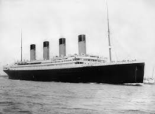

The Great Wall of China’s Construction

The Great Wall of China is a marvel of engineering, but its construction is also marked by significant failures. Originally built as a defense mechanism, various sections of the wall were poorly designed, leading to vulnerabilities that allowed invasions. Additionally, the immense cost of construction led to heavy taxation, causing suffering among local populations. Despite these failures, the wall ultimately became a symbol of Chinese strength and perseverance. The lessons learned during its construction informed future architectural projects, highlighting the importance of sustainable practices and community considerations in large-scale engineering efforts. The Great Wall is now not only a UNESCO World Heritage Site but also a testament to the complexities of human ambition.
Napoleon's Invasion of Russia

Napoleon Bonaparte's invasion of Russia in 1812 is often cited as one of history's greatest military failures. Despite having a formidable army, the campaign was plagued by logistical issues, harsh weather conditions, and insufficient supplies. As winter approached, Napoleon's troops faced devastating losses, leading to a disastrous retreat. This failure significantly weakened Napoleon’s military power and marked the beginning of the decline of his empire. The invasion serves as a powerful lesson about the importance of planning, adaptability, and understanding one's environment in military strategy. The repercussions of Napoleon's failure influenced European politics for decades and reshaped the course of history.
The Titanic
The sinking of the Titanic in 1912 stands as one of the most infamous maritime disasters in history. Dubbed "unsinkable," the Titanic struck an iceberg on its maiden voyage, resulting in the loss of over 1,500 lives. Investigations following the tragedy revealed design flaws, insufficient lifeboats, and poor safety measures. The Titanic disaster led to significant changes in maritime safety regulations, including lifeboat requirements for all vessels and improved iceberg detection technology. This failure served as a wake-up call for the shipping industry, emphasizing the need for stringent safety protocols and preparedness for emergencies. The Titanic’s story continues to captivate people today, reminding us that even the most advanced technologies can fail and that safety must always be a priority.